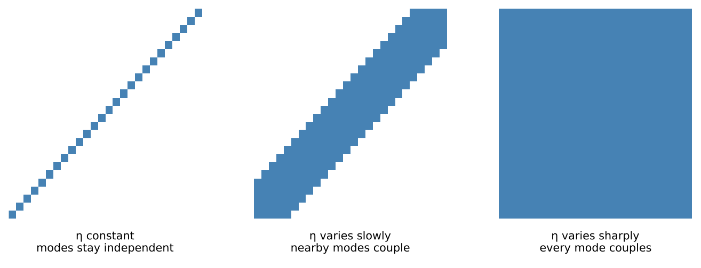

Shear-Thinning Drops: a Hierarchy of Models, from the Exact Problem Down
This file answers one question: can a shear-thinning fluid live inside Reid's Legendre-mode framework, and if so, at what price?
It is written as a chain. We start from the exact free-surface problem with no assumptions at all, then make one simplification at a time. Each step is labelled, and each step records three things:
- the assumption that was made,
- what it throws away,
- how you would undo it if you later decide you need to.
The point of the chain is that you can stop wherever you like and know exactly what you are standing on. The model DropSolver currently implements sits near the bottom; a reader who wants something more faithful can walk back up and see precisely which rung to climb to. Each rung's error is quoted as a number wherever one has been measured.
Notation
| symbol | meaning |
|---|---|
| $R$ | equilibrium drop radius; $x=r/R$ |
| $\rho$ | density (constant) |
| $\eta(\dot\gamma)$ | dynamic viscosity – now a function of the flow |
| $\eta_0,\ \eta_\infty$ | zero-shear and infinite-shear viscosity plateaus |
| $\lambda_c$ | Carreau-Yasuda time constant |
| $a$ | Carreau-Yasuda shape exponent (free) |
| $n$ | power-law index; $n<1$ is shear-thinning |
| $\bm e = \tfrac12(\nabla\bm u+\nabla\bm u^{\mathsf T})$ | strain-rate tensor |
| $\dot\gamma=\sqrt{2\,\bm e\!:\!\bm e}$ | shear-rate invariant (a scalar) |
| $\zeta(\theta,t)$ | radial surface displacement; $\epsilon=\zeta/R$ |
| $P_l(\mu)$, $\mu=\cos\theta$ | Legendre polynomial |
| $a_l(t)$ | amplitude of surface mode $l$ |
| $l'$ | degree index of the viscosity field's own Legendre series |
| $L_\eta$ | highest $l'$ retained – the bandwidth of the coupling |
A note on one symbol that is easy to misread: $l'$ is not a mode of the drop's shape. The shape expansion runs $l=2\ldots M$ with $M$ of order 50–90. $l'$ indexes the angular structure of the viscosity, and as shown in Step 5 it controls only how far off the diagonal the mode-coupling matrix reaches. Its dimension is always $M$.
Some results below are established symbolically, for arbitrary $l$; others only by evaluation at a spread of concrete points, which is strong numerical evidence rather than a proof. The text says which is which.
Step 0 – the exact problem
No assumptions. An incompressible fluid of constant density $\rho$ occupies a region bounded by a free surface $\Sigma(t)$. The unknowns are the velocity $\bm u$, the pressure $p$, and the surface itself.
\[\nabla\cdot\bm u = 0, \qquad \rho\Bigl(\partial_t\bm u + \bm u\cdot\nabla\bm u\Bigr) = -\nabla p + \nabla\cdot\bm\tau ,\]
closed by the constitutive law, which is the only place the fluid's identity enters:
\[\bm\tau = 2\,\eta(\dot\gamma)\,\bm e, \qquad \dot\gamma = \sqrt{2\,\bm e\!:\!\bm e}, \qquad \eta = \eta_\infty + (\eta_0-\eta_\infty)\bigl[1+(\lambda_c\dot\gamma)^a\bigr]^{\frac{n-1}{a}} .\]
On $\Sigma(t)$: the surface moves with the fluid, and the traction jump balances surface tension,
\[(-p\,\bm I + \bm\tau)\cdot\bm n = T_1(\nabla\cdot\bm n)\,\bm n .\]
Everything below is a simplification of these five lines.
The one identity that shapes the whole problem
For a constant viscosity the divergence of the stress collapses to $\eta\nabla^2\bm u$, which is what makes Reid's problem separable. For a variable viscosity it does not. Expanding the divergence of a product,
\[\nabla\cdot(2\eta\bm e) = 2\eta\,(\nabla\cdot\bm e) + 2(\nabla\eta)\cdot\bm e ,\]
and for an incompressible field $\nabla\cdot\bm e = \tfrac12\nabla^2\bm u$, so
\[\boxed{\ \nabla\cdot(2\eta\bm e) = \eta\,\nabla^2\bm u \;+\; 2(\nabla\eta)\cdot\bm e\ }\]
In plain English: a shear-thinning fluid adds exactly one term to the Navier-Stokes momentum equation. Everything hard about this project is contained in that single extra term $2(\nabla\eta)\cdot\bm e$. Reid was entitled to drop it because for him $\nabla\eta\equiv 0$.
Let us verify the incompressible identity $\nabla\cdot\bm e = \tfrac12\nabla^2\bm u$ rather than assert it, since the boxed result rests on it.
Step 1 (A1) – linearise in the surface amplitude
Assumption. The surface displacement is small, $\epsilon=\zeta/R\ll1$.
What it drops. The advective term $\bm u\cdot\nabla\bm u$, and the transfer of the boundary conditions from the deformed surface $r=R+\zeta$ to the sphere $r=R$. Error $O(\epsilon^2)$.
How to undo it. Standard weakly-nonlinear free-surface theory. This is entirely independent of the rheology question and can be revisited separately.
Linearising the kinematics does not linearise the rheology
This is the most consequential distinction in the whole chain.
Linearising the kinematics does not linearise the rheology. The strain rate is $O(\epsilon)$, so $\dot\gamma=\epsilon\,\hat{\dot\gamma}$, but $\eta$ is a nonlinear function of that small quantity:
\[(\lambda_c\dot\gamma)^a = (\lambda_c\hat{\dot\gamma})^a\,\epsilon^a .\]
If $a$ is not an even integer, $\epsilon^a$ is not analytic at $\epsilon=0$. There is no Taylor series in $\epsilon$ of which this is "the leading term", and for $a<1$ the correction is larger than any linear term as $\epsilon\to0$.
So "linear in $\epsilon$" and "expandable in powers of $\epsilon$" are different statements. The first is a legitimate assumption about the geometry. The second is false for a general Carreau-Yasuda fluid, and no amount of small amplitude rescues it.
The ratio $|\epsilon|^a/|\epsilon|$ measures whether the correction is genuinely higher order. If it stays bounded, the term is a legitimate perturbation; if it diverges, there is nothing to expand in:
| $\epsilon$ | $a=0.5$ | $a=0.743$ | $a=1$ | $a=2$ |
|---|---|---|---|---|
| $10^{-1}$ | 3.16 | 1.81 | 1 | 0.1 |
| $10^{-3}$ | 31.6 | 5.90 | 1 | $10^{-3}$ |
| $10^{-5}$ | 316 | 19.3 | 1 | $10^{-5}$ |
| $10^{-7}$ | $3.16\times10^{3}$ | 63.0 | 1 | $10^{-7}$ |
The shear-thinning columns grow as the amplitude falls, monotonically, across six decades. The $a=2$ column collapses – which is precisely what "higher order" means, and precisely why the classical Carreau theory closes where the general one cannot. $a=1$ is the marginal case.
Step 2 (A2) – axisymmetry
Assumption. The forcing (impact) is axisymmetric.
What it drops. Nothing. This step is exact, and it is worth proving because it is the one piece of good news in the whole chain.
Claim. A generalized Newtonian fluid cannot break axisymmetry.
Proof. $\dot\gamma=\sqrt{2\bm e\!:\!\bm e}$ is a scalar invariant of the strain-rate tensor. If $\bm u$ is axisymmetric then $\bm e$ is axisymmetric, hence $\dot\gamma$ is a function of $(r,\theta)$ only, hence $\eta=\eta(\dot\gamma)$ is axisymmetric, hence $\nabla\cdot(2\eta\bm e)$ is an axisymmetric poloidal field. No $m\neq0$ content is ever generated. $\blacksquare$
Consequence. Spherical harmonics $Y_l^m$ collapse to Legendre polynomials $P_l(\cos\theta)$ permanently. You never need the full $Y_l^m$ machinery for this physics – not as an approximation, but as a theorem. Only a non-axisymmetric impact would change that.
Step 3 (A3) – poloidal representation and modal expansion
Assumption. None beyond incompressibility and axisymmetry – this is a change of variables, not a simplification.
An axisymmetric incompressible velocity field is generated by a single scalar. Writing the surface shape as
\[\zeta(\theta,t) = R\sum_{l\ge2} a_l(t)\,P_l(\cos\theta),\]
the state of the drop is the vector of modal amplitudes $\{a_l(t)\}$, $l=2\ldots M$. This is exactly the state julia/src/types.jl carries.
For each mode, Reid's radial velocity amplitude is $F(x)=U(x)/x^2$ with $U(x)=C\,x\,j_l(qx)+\Pi_0 x^{l+1}$, and the strain components follow from the poloidal representation. Those are derived in The Viscous Drop: Reid (1960); we use them below without re-deriving.
Step 4 (L4) – the full coupled system
We are now at the most general tractable statement of the problem, and this is the rung to remember: everything below is a simplification of this, and anything you later want to recover, you recover by climbing back to here.
Expand the viscosity field in its own Legendre series,
\[\eta(r,\theta,t) = \sum_{l'} \eta_{l'}(r,t)\,P_{l'}(\cos\theta),\]
substitute into $\eta\nabla^2\bm u + 2(\nabla\eta)\cdot\bm e$, and project the momentum equation onto $P_l$. Because both $\eta$ and $\bm u$ are now Legendre series, every term becomes a sum of integrals of three angular functions, and the modal equations couple:
\[\boxed{\ \ddot a_l + \sum_{l''}\Bigl[\mathcal D^{(2)}_{l l''}\,\dot a_{l''} + \mathcal D^{(1)}_{l l''}\,a_{l''}\Bigr] = F_l\ }\]
where $\mathcal D^{(1)},\mathcal D^{(2)}$ are $M\times M$ matrices built as
\[\mathcal D_{l l''} = \sum_{l'} \bigl(\text{radial integral of }\eta_{l'}\bigr) \times G^{l'}_{l l''} , \qquad G^{l'}_{l l''} = \frac{2l+1}{2}\int_{-1}^{1} P_l P_{l'} P_{l''}\,d\mu .\]
Compare Reid, where $\eta$ is constant so only $l'=0$ survives, $G^{0}_{l l''}=\delta_{l l''}$, and the matrices are diagonal – one independent oscillator per mode.
The Gaunt selection rule, and what actually controls cost
The triple integral $G^{l'}_{l l''}$ is a Gaunt coefficient. It vanishes unless
\[|l-l''| \le l' \le l+l'' \qquad\text{and}\qquad l+l'+l''\ \text{is even}.\]
This rule is geometric: it holds no matter what the fluid is. Read backwards it says something decisive:
Mode $l$ couples to mode $l''$ only if $|l-l''|\le l'$ for some $l'$ at which the viscosity field has content. The bandwidth of the coupling matrix equals the spectral width of $\eta$, and nothing else.
So the cost of the coupled model is not set by $M$. If $\eta$'s angular spectrum is confined to $l'\le L_\eta$, then $\mathcal D$ is a banded $M\times M$ matrix of half-bandwidth $L_\eta$, and applying it costs $O(M L_\eta)$ rather than $O(M^2)$. With $M=90$ and

What the viscosity's angular structure does to the mode-coupling matrix. Constant viscosity leaves it diagonal and every mode independent; slow variation couples neighbours into a band; sharp variation couples everything. Step 6 measures which of these the real fluid produces.
$L_\eta=6$ that is nearly as cheap as diagonal.
Step 4b – where the exponent $a$ enters structurally
We can now say precisely what is special about particular exponents, and it is a statement about structure, not about accuracy.
The coupling matrix is exactly banded, and exactly truncatable, if and only if $\eta$ is a polynomial in the components of $\bm e$. Track the two nestings:
\[\eta = \eta_\infty + \Delta\eta\,(1+X)^{p}, \qquad X = (\lambda_c\dot\gamma)^a, \qquad p = \frac{n-1}{a}.\]
- $X$ is a polynomial in $\bm e$ iff $a$ is a non-negative even integer, because $\dot\gamma^a=(\dot\gamma^2)^{a/2}$ and $\dot\gamma^2=2\bm e\!:\!\bm e$ is quadratic.
- $(1+X)^p$ is a polynomial in $X$ iff $p$ is a non-negative integer.
For a genuinely shear-thinning fluid $n<1$, so $p<0$ and the second condition never holds. The conclusion:
For no real shear-thinning fluid is $\eta$ exactly polynomial. The coupling matrix is never exactly banded, and $L_\eta$ is always an empirical truncation with a measurable error – never an exact one.
It is worth being precise about why the classical $a=2$ theory closes. Not because $a=2$ makes $\eta$ polynomial – it does not – but because that theory additionally truncates $(1+X)^p\approx 1+pX$ at first order, and $X$ alone is polynomial when $a=2$. The finiteness comes from the perturbative truncation, and $a=2$ merely keeps the truncated object polynomial.
The exception that matters: $p=-1$
There is one value of $p$ that is special without being a non-negative integer, and it is the one the validation fluid has. If $p=-1$, i.e. $n=1-a$, then
\[\eta = \eta_\infty + \frac{\Delta\eta}{1+X} \qquad\Longleftrightarrow\qquad (1+X)\,\eta = (1+X)\,\eta_\infty + \Delta\eta .\]
The constitutive law becomes an algebraic constraint that is linear in $\eta$ and linear in $X$, with no fractional power of anything left on the outside. This is the Cross model, and it is why Step 9 below is a genuine simplification rather than a relabelling.
Step 5 (A5) – the temporal closure
Assumption. How $\eta$'s time dependence is reduced.
$\eta$ depends on $t$ through $\dot\gamma(t)$, which oscillates with the mode. Three inequivalent choices are available, and the production code takes the first:
| choice | what it keeps | status |
|---|---|---|
| (a) instantaneous $\eta(t)$ | everything | quasi-static; unjustified |
| (b) period-averaged | the $m=0$ channel | justified by the lemma below |
| (c) Floquet | $m=0$ and $m=2$ | most faithful, most work |
Why (a) is not licensed
$\lambda_l$ and $\omega_l^2$ are eigenvalues of a boundary-value problem. They are not pointwise functions of the instantaneous state. Substituting a time-varying $\eta$ into them is a quasi-static approximation, and it needs $\eta$ to vary slowly compared with the mode's own period.
It does the opposite. Here is the reason, and it is exact:
Period-$\pi$ lemma. Let $S=\sqrt{2\bm e\!:\!\bm e}$ be built from any single-frequency oscillating axisymmetric field. Each component obeys $\mathrm{Re}(e_{ij}e^{-i\phi})^2=\tfrac12|e_{ij}|^2[1+\cos(2\phi-2\arg e_{ij})]$, manifestly invariant under $\phi\to\phi+\pi$. Hence $S^2$, $S$, and any function of $S$ – including $\eta$ – have period $\pi$ in the oscillation phase, not $2\pi$.
So $\eta$ is modulated at exactly twice the mode frequency: the fastest modulation the problem admits. The quasi-static ratio is $O(1)$ by construction, at every amplitude. There is no limit in which choice (a) becomes valid.
Two corollaries worth stating:
- A period-$\pi$ function has identically zero content at odd harmonics. In particular there is no forcing at the mode's own frequency – so the leading effect is carried entirely by the $m=0$ (period-averaged) channel. That is choice (b), and the lemma is its justification.
- The surviving $m=2$ channel modulates the damping at $2\omega$, which is the principal parametric resonance condition. Choice (b) discards it; whether that is safe is a stability question this file does not answer.
Fourier-decomposing $S$ over a full $2\pi$ period, for a strain field with four independent complex components, gives
| harmonic | $m=0$ | $m=1$ | $m=2$ |
|---|---|---|---|
| coefficient | $2.2374$ | $<5\times10^{-16}$ | $0.2781$ |
The fundamental is zero to machine precision – not small, absent – while the mean and the second harmonic are both $O(1)$. There is nothing for a resonant solvability condition to act on.
Step 6 (A6) – truncate the viscosity spectrum at $L_\eta$
Assumption. $\eta$'s Legendre content above $l'=L_\eta$ is negligible.
What it drops. Coupling between modes further apart than $L_\eta$. The matrix becomes banded; cost falls from $O(M^2)$ to $O(M L_\eta)$.
Error. Exactly the discarded coupling, which can be measured directly. It has been, and the measurement rules this rung out.
Measurement, and the choice of error norm
The natural-looking metric, "what fraction of $\sum_{l'}|\eta_{l'}|^2$ lies below $L_\eta$", says $L_\eta=2\ldots5$ suffices everywhere. That metric is misleading. What controls the banding error is the summed magnitude of the discarded coefficients, $T_1(L)=\sum_{l'>L}|\eta_{l'}|/|\eta_0|$, because those terms enter the coupling matrix additively, not in quadrature. The spectrum turns out to have a long, slowly-decaying plateau carrying little power but large summed magnitude.
Measured on Reid's actual viscous eigenmodes (volume-averaged, $\mathrm{Oh}=0.2$, in the saturated thinned regime), the smallest $L_\eta$ holding $T_1<10^{-2}$:
| modal spectrum | $L_\eta$ for 1% |
|---|---|
| single mode $l=2$ | 8 |
| $\propto l^{-2}$, $M=30$ | 32 |
| $\propto l^{-2}$, $M=50$ | 50 |
| $\propto l^{-1}$, $M=30$ | 126 |
| real solver state, $M=30$ | 133 |
| real solver state, $M=20$ | 139 |
$L_\eta\gtrsim M$, and for realistic multi-mode states $L_\eta\gg M$. The coupling matrix is effectively dense. This rung buys nothing.
At $M=30$ you would need a half-bandwidth of $\approx133$ to keep 1% – i.e. a full matrix. Banding at $L_\eta=8$ leaves a 40% error even under the forgiving RMS norm.
Why the spectrum decays so slowly
The mechanism is worth stating because it is physical, not numerical. $L_\eta$ tracks the contrast of the $\eta$ field: configurations where $\eta$ spans $9\times$ are narrow, those spanning $100\times$ are broad. The contrast comes from near-nodal points of the superposed strain field, where $S$ collapses and the fluid snaps back toward unthinned. That is a near-discontinuity in $\mu$, and a near-discontinuity has a Legendre spectrum that decays only algebraically. With one mode active there are few such nodes and the field is smooth; with a dozen modes beating against each other the nodal set is dense.
Caveat. Coefficients beyond $l'=140$ were not measured, so every entry above is a lower bound on the discarded coupling. The measurement is quoted here rather than recomputed: it takes roughly 30 minutes and relies on a separate high-$l$ eigenfunction evaluator, itself checked to $5\times10^{-15}$ against Reid's tangential-stress boundary condition.
How to undo it. Raise $L_\eta$. The structure does not change – only the bandwidth. But since $L_\eta\gtrsim M$ is required, the practical move is to skip this rung entirely and either take L4 dense or drop to A7.
Step 7 (A7) – keep only $l'=0$: a spherically symmetric viscosity
Assumption. $L_\eta=0$, i.e. $\eta=\eta(r,t)$ with no angular structure.
Why this rung is special. A spherically symmetric $\eta$ commutes with the angular Laplacian. Every mode decouples again: $G^{0}_{l l''}=\delta_{l l''}$, the matrices return to diagonal, and the entire architecture of the solver – one independent oscillator per mode – is recovered intact.
What you give up is only the closed form. The radial equation now has an $r$-dependent coefficient, so it is no longer Bessel's equation and must be solved as a numerical two-point boundary-value problem, once per mode. julia/src/reid.jl's continuation machinery already knows how to track eigenvalue branches through such a solve.
The same measurement that killed A6 also prices A7. At the physical operating point, for a real multi-mode solver state, the anisotropic coefficients are $|\eta_1|/|\eta_0|\approx1.3$ and $|\eta_2|/|\eta_0|\approx0.2$. The angular structure of $\eta$ is comparable to or larger than its mean. Discarding all of it is a leading-order modeling error, not a perturbative one.
Measured with a single active $l=2$ mode the picture looks far milder: the viscosity then varies by only $1.1$–$1.2\times$ across the drop, which would make spatial homogenization a $\sim10\%$ effect. That estimate holds for one mode and not for a realistic state: with a dozen modes beating, the nodal collapse described in Step 6 makes $\eta$ span $100\times$. Any scalar-$\mathrm{Oh}_{\mathrm{eff}}$ model inherits this error.
A7 is the cheapest defensible rung, not an accurate one. It keeps the radial structure at zero coupling cost.
What Reid still gives you for free here
Working through the boundary conditions with $\eta=\eta(r)$ rather than constant $\mu$:
- BC1 (kinematic) contains no viscosity at all. Unchanged.
- BC2 (tangential stress). The free-surface condition is $\tau_{r\theta}=2\eta\,e_{r\theta}=0$. Since $\eta\ge\eta_\infty>0$ everywhere, this forces $e_{r\theta}=0$ regardless of whether $\eta$ is constant. Unchanged, and so is the whole $\tau_{r\theta}=0\Rightarrow\mathcal L_2[U]=0$ reduction already derived in The Viscous Drop: Reid (1960).
- BC3 (normal stress) carries $\eta$ multiplicatively, so it becomes the surface value $\eta_s=\eta(\dot\gamma|_{r=R})$. Same form, one state-dependent coefficient.
So the full scope of "adapt Reid for a shear-thinning fluid" is: one extra term in the momentum equation, one coefficient in BC3, and nothing else.
The radial equation, derived
Reid's problem is separable because his operator commutes with the angular Laplacian. With $\eta=\eta(r)$ that is still true, so we can derive the replacement for his radial ODE directly.
Use the Stokes stream function for axisymmetric incompressible flow. For surface mode $l$,
\[\psi(r,\theta) = U(r)\,A_l(\theta), \qquad A_l(\theta) = \frac{\sin^2\theta\;P_l'(\cos\theta)}{l(l+1)},\]
which reproduces $u_r=F(r)P_l(\cos\theta)$ with $U=r^2F$ – Reid's own variable. The angular part is a Gegenbauer function, so it diagonalises the Stokes operator $E^2=\partial_{rr}+\frac{1-\mu^2}{r^2}\partial_{\mu\mu}$:
\[E^2\psi = \mathcal D_l[U]\,A_l, \qquad \mathcal D_l[U] \equiv U'' - \frac{l(l+1)}{r^2}U .\]
Taking the $\varphi$-component of the curl of the momentum equation annihilates the pressure, which is what makes this tractable at all. With $\rho=1$, $\eta_0=1$, and a time factor $e^{-\sigma t}$ (so $\sigma=q^2$), building $\bm e$, then $\bm\tau=2\eta(r)\bm e$, then $\nabla\cdot\bm\tau$ in spherical coordinates, and finally the curl, gives for constant $\eta$
\[\boxed{\ \bigl[\nabla\times\bm M\bigr]_\varphi = -\frac{A_l(\theta)}{r\sin\theta}\, \mathcal D_l\bigl(\mathcal D_l + q^2\bigr)[U]\ }\]
– exactly Reid's $\mathcal D_l(\mathcal D_l+q^2)U=0$, recovered from the general variable-viscosity machinery. Verified to a relative spread of $\sim10^{-13}$ at five independent $(r,\theta)$ points, for $l=2,3,4$, against an independently constructed Reid operator. The factor $1/(r\sin\theta)$ is the Jacobian between the curl and the stream-function operator, not a physical term.
What this buys. The same construction with $\eta=\eta(r)$ non-constant produces additional terms proportional to $\eta'$ and $\eta''$, and nothing else – the angular structure is untouched, so the equation stays diagonal in $l$, exactly as Step 7 promised. The resulting radial problem is a linear two-point boundary-value eigenproblem: no longer Bessel, but entirely standard, and julia/src/reid.jl's continuation machinery already knows how to track eigenvalue branches through one.
Step 8 (A8) – freeze the radial profile: $\eta(r)\to\eta_{\rm eff}$
Assumption. The radial variation of $\eta$ is small enough to replace by a single number.
What it buys. The radial equation becomes constant-coefficient again, i.e. Bessel's equation, and Reid's closed-form characteristic equation returns verbatim – evaluated at a shifted Ohnesorge number.
This is where the current production code sits (st_exact_extension.jl), combined with choice (a) of Step 5.
How to undo it. Step 7.
Step 9 – the Cross model as a rung, not an alternative
Cross is not a different model; it is Carreau-Yasuda restricted to $p=(n-1)/a=-1$, i.e. $n=1-a$:
\[\eta = \eta_\infty + \frac{\eta_0-\eta_\infty}{1+(K\dot\gamma)^m}, \qquad K=\lambda_c,\quad m=a .\]
Two reasons this rung is worth taking, both structural:
- By Step 4b the constitutive law becomes an algebraic constraint $(1+X)\eta=(1+X)\eta_\infty+\Delta\eta$ – linear in $\eta$, linear in $X$, no outer fractional power. Symbolic manipulation becomes tractable in a way it is not for general $p$.
- It is how the validation fluid is actually characterised: the fitting script obtains $\eta_0,\eta_\infty,K,m$ and only then converts to Carreau-Yasuda parameters. Deriving Cross directly removes that conversion, and with it a genuine trap – under the Cross mapping the Carreau-Yasuda exponent $(1-n)/a$ is exactly 1, which is easy to confuse with the thinning amplitude $\Delta=(\eta_0-\eta_\infty)/\eta_0$. The two coincide only when $\Delta\approx1$, as it happens to for this fluid.
What Cross does not buy: $X=(K\dot\gamma)^m$ still carries a fractional power of the field when $m$ is not an even integer, so the viscosity spectrum is still formally infinite and $L_\eta$ is still an empirical truncation. Cross simplifies the outer algebra, not the angular problem.
Step 10 – the Newtonian floor, and a live cross-check
The bottom of the chain must reproduce the Newtonian result the solver already implements. Two checks against the running solver, rather than against this page's own algebra: Reid's exact finite-Ohnesorge coefficients must emerge when the viscosity stops depending on the flow, and they must reduce to Lamb as $\mathrm{Oh}\to0$.
| $\mathrm{Oh}$ | $|\lambda_{\rm Reid}-\lambda_{\rm Lamb}|/\lambda_{\rm Lamb}$ | |:–|–:| | $10^{-2}$ | $5.17\times10^{-2}$ | | $10^{-3}$ | $1.60\times10^{-2}$ | | $10^{-4}$ | $5.05\times10^{-3}$ |
Lamb is the $\mathrm{Oh}\to0$ asymptote, not an approximation valid at fixed $\mathrm{Oh}$, so the meaningful statement is that the discrepancy falls monotonically and reaches $0.5\%$. At a working $\mathrm{Oh}=0.05$ the live solver returns $\lambda_2=0.2187$ against Lamb's $0.2500$ – a $13\%$ difference, which is what the :reid viscous model exists to remove.
Summary of the chain
| rung | model | assumption to get here | coupling structure |
|---|---|---|---|
| 0 | exact free-surface generalized Newtonian | – | – |
| A1 | linear in amplitude | $\epsilon\ll1$; drops advection | $\eta$ still fully nonlinear |
| A2 | axisymmetric | axisymmetric forcing – exact | $Y_l^m\to P_l$, no $m$-coupling ever |
| A3 | poloidal + modal | change of variables | state is $\{a_l\}$, $l=2\ldots M$ |
| L4 | full coupled system | none beyond A1–A3 | dense; bandwidth $=$ spectral width of $\eta$ |
| A5 | temporal closure | (a) instant / (b) period-avg / (c) Floquet | picks which $\eta(t)$ channel survives |
| A6 | truncate at $L_\eta$ | discarded coupling small – measured false | banded, but needs $L_\eta\gtrsim M$: no saving |
| A7 | $\eta=\eta(r)$ | viscosity spherically symmetric – leading-order error | diagonal; numerical radial BVP per mode |
| A8 | $\eta\to\eta_{\rm eff}$ | radial variation small | Bessel closed form – current code |
| A9 | $\eta=\eta_0$ | no thinning | Reid |
| A10 | $Oh\to0$ | inviscid | Lamb |
Cross sits alongside the chain as the $p=-1$ slice (Step 9), and can be taken at any rung.
What this file establishes
Free, and permanent. A2: a generalized Newtonian fluid cannot break axisymmetry, so Legendre polynomials suffice forever. BC1 and BC2 carry over from Reid untouched; BC3 changes by one coefficient. The scope of "adapt Reid for shear thinning" is one extra momentum term, $2(\nabla\eta)\cdot\bm e$.
Ruled out. A5(a), evaluating $\eta$ instantaneously – what the production code does – is not licensed at any amplitude, because the period-$\pi$ lemma puts the modulation at exactly twice the mode frequency. A6, banding the coupling matrix, buys nothing: the measured $L_\eta$ is $\gtrsim M$ for synthetic spectra and $\gg M$ for real solver states.
Priced, and not cheap. A7 restores exact diagonality, but discards angular structure that is comparable to or larger than the mean viscosity. It is the cheapest defensible rung, not an accurate one.
The conclusion. Between L4 (dense) and A7 (leading-order error) there is no cheap-and-accurate rung. Any model built on a single scalar $\mathrm{Oh}_{\mathrm{eff}}$ per mode – which is every shear-thinning model implemented here so far – sits below A7 and therefore inherits at least its error. The available options are to take L4 dense and pay for it, or to quote A7's error alongside the result.
Still open. Whether L4 is affordable at $M\sim50$ (the Gaunt coefficients are geometry and precompute once; only the radial integrals of $\eta_{l'}$ change per step); the stability cost of discarding the $m=2$ parametric channel; and the eigenvalue problem for the variable-$\eta$ radial operator of A7.
This page was generated using Literate.jl.